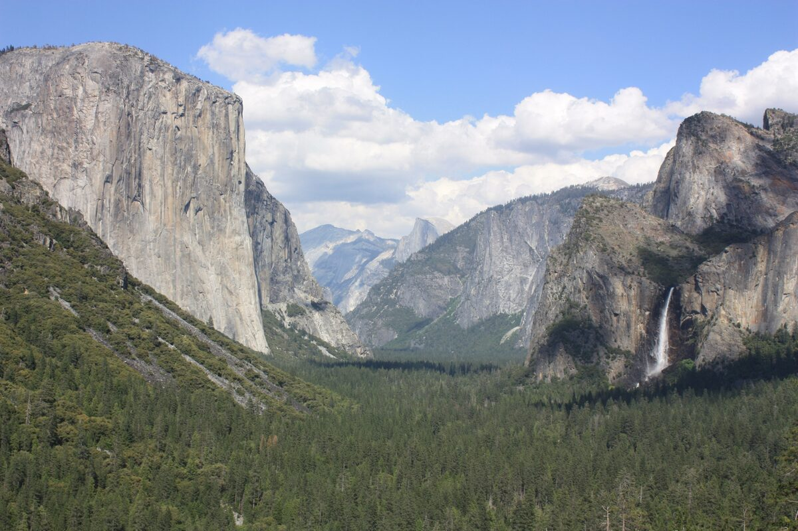
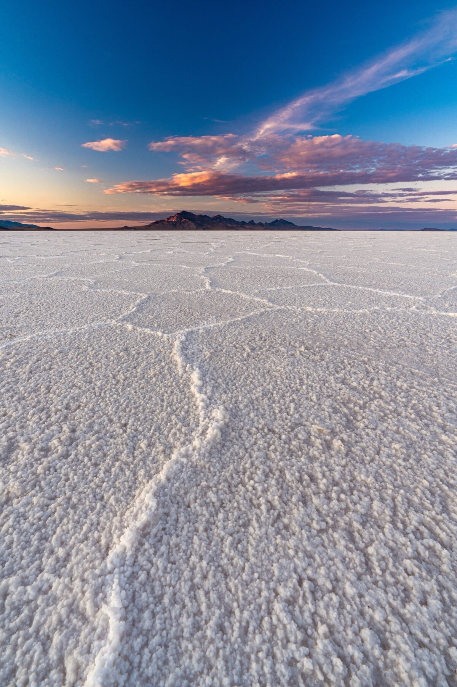
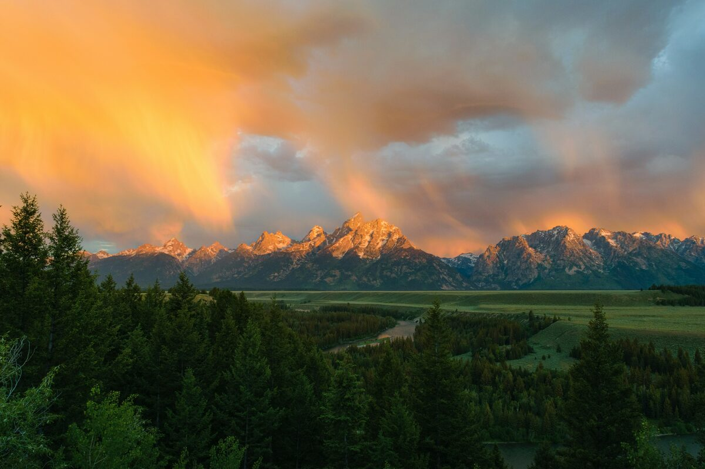
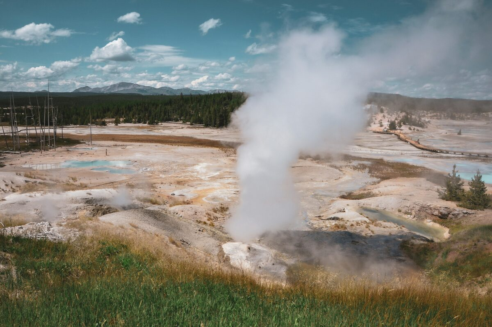
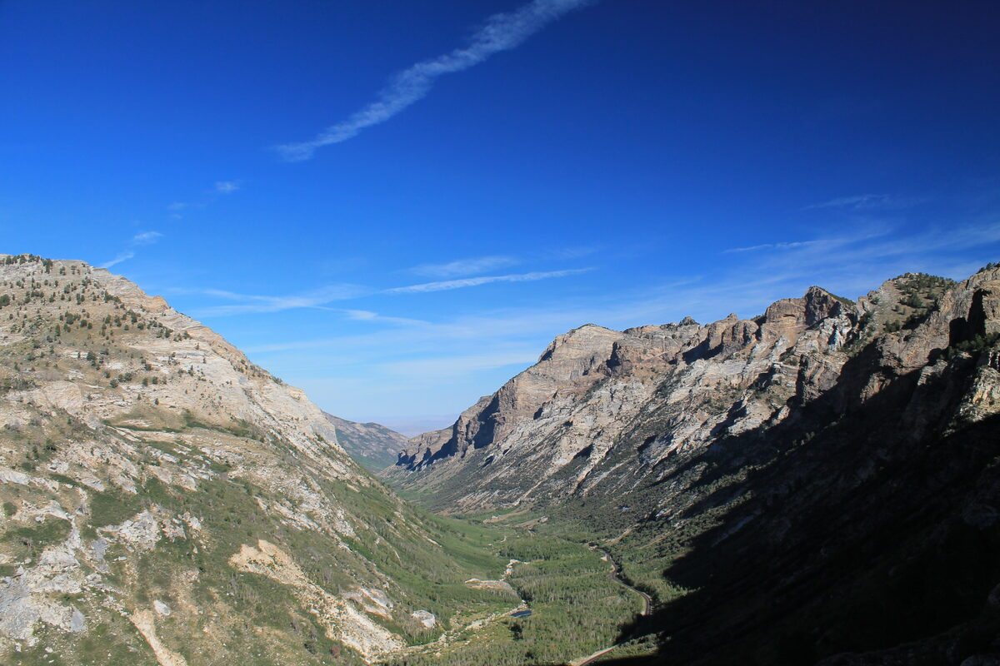
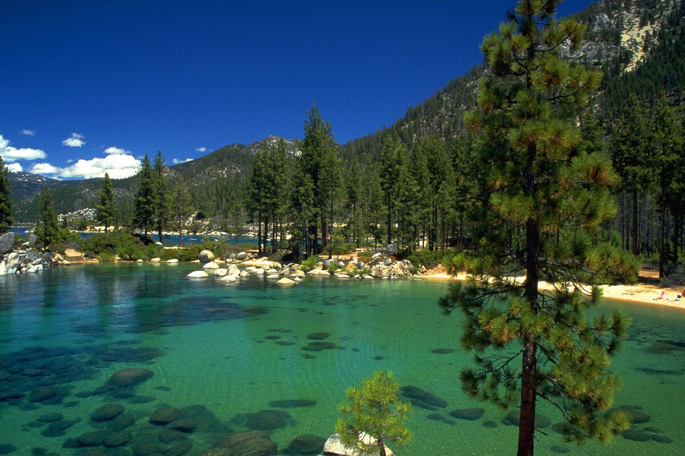

01
Yosemite
California
Granite walls, waterfalls, and the first real stretch of the trip. We ease into the miles here — trailheads, valley views, and a night under some of the darkest skies within a day of the Bay.

02
BonnevilleSalt Flats
Utah
Nothing but white salt to the horizon. Home to a century of land-speed records — this is the surreal, otherworldly middle of the trip. Bring a wide lens and something reflective to shoot.

03
Jackson Hole
Wyoming
The Tetons rising straight out of the valley floor. A good town to resupply, eat well, and stage for Yellowstone — plus some of the best alpine scenery on the entire loop.

04
Yellowstone
Wyoming
Geysers, hot springs, canyons, and wildlife — the anchor stop of the whole trip. Plan for at least a couple of days; there's more here than any one loop through the park can cover.

05
Ruby Mountains
Nevada
The turn south, and the quiet part of the trip. Nevada's 'Alps' — jagged, glacially carved, and almost nobody else out there. A reset after the crowds of Yellowstone.

06
Lake Tahoe
California / Nevada
The wind-down. Clear water, easy miles, good food — one last stop to decompress together before the final run back into the city.
The plan
Seven legs,2,260 miles
Out through the Sierra and across Nevada, north to the Tetons, then the long quiet run back down. Scroll to trace it.
-
Leg 01
San Francisco → Yosemite
190 mi4h 00mI-80 → CA-120
Out over the Bay Bridge and up through the foothills. The easy one.
-
Leg 02
Yosemite → Bonneville Salt Flats
530 mi9h 30mTioga Pass → US-395 → US-6
The big one. Over Tioga Pass at 9,943 ft, then east across Nevada on two-lane highway with almost no services — Tonopah, Ely and Wendover are the fuel stops.
Tioga Pass is seasonal. Closed, this leg reroutes north via Reno: 640 mi, about 11 hours.
-
Leg 03
Bonneville → Jackson Hole
400 mi6h 45mI-80 → I-15 N → US-89
Past Salt Lake, up through Idaho and into Star Valley, finishing through the Snake River Canyon.
-
Leg 04
Jackson Hole → Yellowstone
100 mi2h 30mUS-89/191 via Grand Teton
The shortest leg and the best drive on the trip — straight up the Tetons and in through Yellowstone's south entrance. Budget three hours; bison jams are real.
Yellowstone's south entrance and Craig Pass run roughly May 8 to Oct 31.
-
Leg 05
Yellowstone → Ruby Mountains
490 mi9h 00mUS-20 → I-15 → I-84 → US-93
Out the west entrance and the long haul south through Idaho into the top of Nevada. The emptiest stretch of the loop.
-
Leg 06
Ruby Mountains → Tahoe
360 mi6h 00mI-80 W → US-50
Straight west across Nevada on I-80 to Reno, then up over Spooner Summit to the lake.
-
Leg 07
Tahoe → San Francisco
190 mi3h 45mUS-50 → I-80 W
Down Echo Summit and home. Leave early — Sunday afternoon westbound adds an hour.